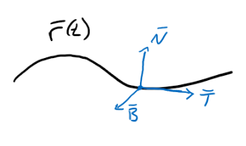

Consider a curve in \(\mathbb{R}^3\) given by \(\displaystyle \vec{r}(t)\).
If we wanted to describe this curve to a person looking from the outside, we could use \(x,y,z\) coordinates.
However, if we want to describe what is happening to a person walking along the curve the standard coordinate directions probably don't mean much.
Instead we use three other directions, the tangent, normal and binormal vectors.

Explain why these are orthogonal to each other.
Consider the curve given by \(\displaystyle \vec{r}(t) = \begin{bmatrix}2\sin(t)\\5t\\2\cos(t)\end{bmatrix}\).
We know through Newton's Second Law (\(F=ma\)) that force and acceleration are related.
We can break the acceleration (force) of a particle's motion down into tangential and normal components. This is often important when considering quantities like work (\(W = \vec{F}\cdot \vec{r}\)) and power (\(P = \vec{F}\cdot \vec{v})\).
Breaking apart a quantity into pieces is often called decomposition.
We can decompose acceleration into tangential and normal components with \(\vec{a} = |\vec{v}|'\vec{T} + \kappa |\vec{v}|^2 \vec{N}\).
Suppose a train track weaves through a valley on a sinusoidal center-path \(\vec{r} (s) = \langle s, A \sin(2\pi s), 0 \rangle \), where \(s\) is in kilometers. On each turn, the track must be banked on an angle \(\theta\) appropriately so that passengers in the dining car won't experience lateral forces from cornering that would cause passengers to sway sideways, and their coffee cups to slosh (lawsuits!). That is, the force from each turn that is experienced by passengers (and their beverages) must be matched by the lateral component of the normal force from the floor of the train. The train's speed \(v\) must remain constant at all times.
In order to determine the banking angle, \(\theta\), consider the plane normal to \(\vec{r}'(s)\) for each \(s\). We can create local coordinate unit vectors \(\vec{u}\) (horizontal) and \(\vec{w}\) (vertical). Each passenger car experiences a gravitational force \(\vec{F}_g = -mg \vec{w}\). The normal force vector \(\vec{F}_n\) from the track onto the passenger car vector balances \(\vec{F}_g\) so that there is no vertical motion on the track center. The normal vector \(\vec{F}_n\) is oriented normal to the bank of the track at an angle \(\theta\) so \(\vec{F}_n = \langle -mg\tan(\theta), mg \rangle \). The train's acceleration is characterized as \(\vec{a} = \kappa v^2 \vec{N} \) because \(dv/dt = 0\). The normal \(\vec{N}\) is pointing in the \(\vec{u}\) direction because there is no vertical acceleration and no forward-backward track acceleration. To achieve no-slosh, the \(\vec{w}\) normal force must match the centripetal force, that is \(m v^2 \kappa \vec{w} = mg\tan(\theta) \vec{w}\).
Hints: Solve for \(\theta\), for each \(s\), by computing the net force from gravity \(\vec{F}_g\) and the normal force from the floor \(\vec{F}_n\) and equating it to the centripetal force obtained from the curve \(\vec{N}\). Note also the acceleration vector of the train lies in the osculating plane, w hich is decomposed into forward acceleration \(\vec{T}\), and centripetal acceleration \(\vec{N}\) according to \(\vec{a} = |\vec{v}|'\vec{T} + \kappa |\vec{v}|^2 \vec{N}\). One way to think about the physical situation is that the bank angle would make the coffee cup slide off the table angled at \(\theta\), but the turning train is also constantly moving to perfectly position the table underneath cup, thereby making the cup stationary on the table. Also recall that curvature is in units of inverse distance. Also, it may be useful to use a Taylor approximation to estimate window seat vertical motion to be \(z_{vert}(t) = 1.5 \sin(\theta(t)) \approx 1.5 \tan(\theta(t))\) for small angles, once \(\theta(t)\) is found.